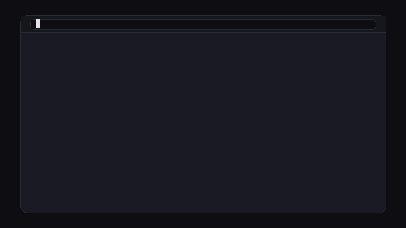
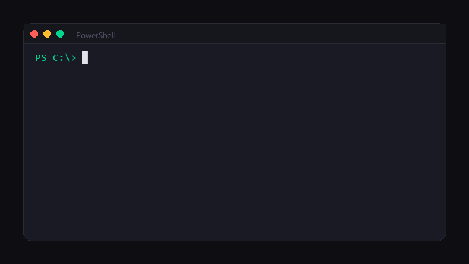
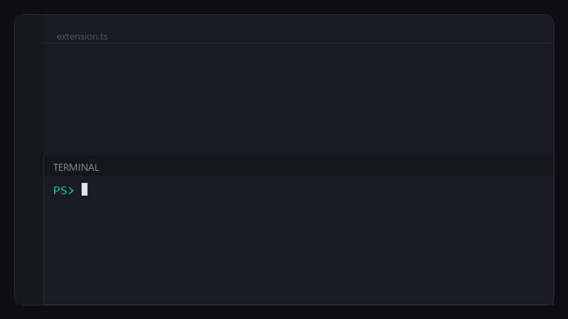
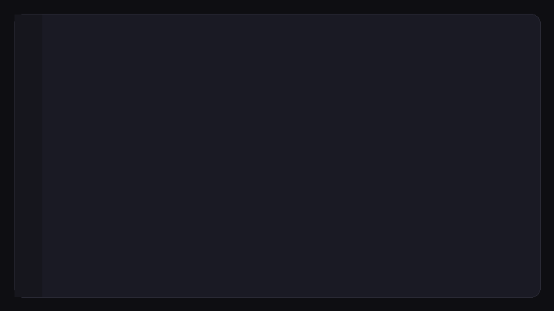
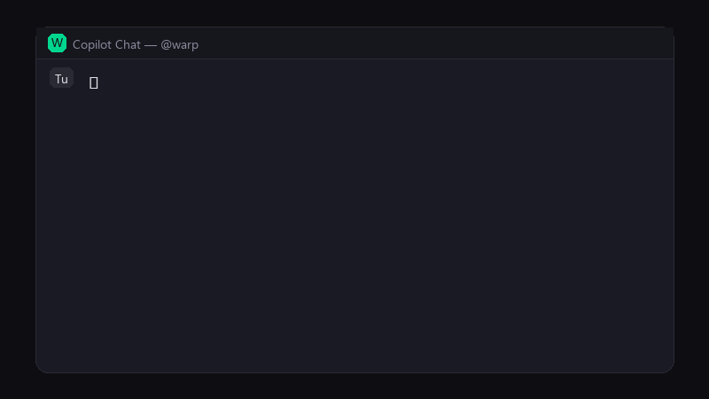
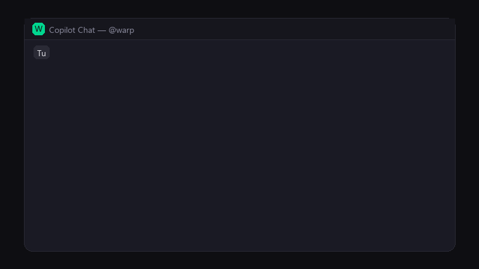
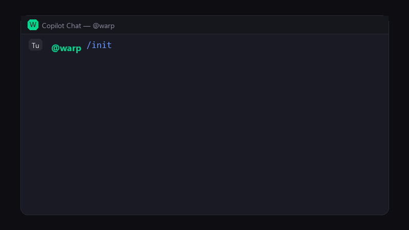
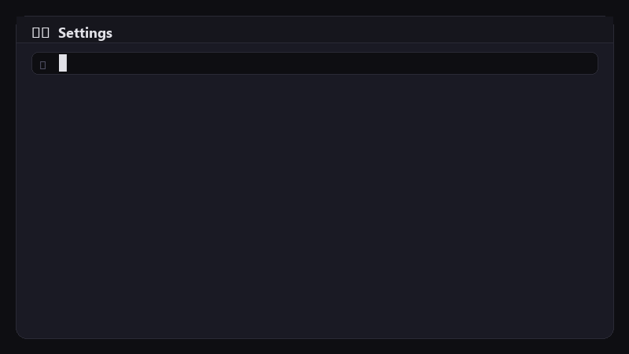

Get started with OzBridge
in a few minutes
Use Warp's AI agents straight from VS Code chat. No technical background needed — follow the steps and you'll be up and running.
Let's go →How it works
What you need before you start
VS Code
Microsoft's editor — free and cross-platform.
≥ 1.96.0GitHub Copilot Chat
The AI chat extension for VS Code. Required for the @oz panel.
Warp Terminal
The advanced terminal that ships the “Oz” agent CLI.
latest stableInstall Warp and the Oz CLI
Download Warp
Go to warp.dev and download the Windows installer. Run it and follow the wizard.

Check that Oz is on your PATH
Open PowerShell and run:
C:\Users\YourName\AppData\Local\Programs\Warp\oz.cmd

First sign-in
Authenticate with your Warp account:
Opening browser for authentication...
✓ Successfully logged in!
Install with Homebrew
$ which oz
/Applications/Warp.app/Contents/MacOS/oz
$ oz auth login
✓ Successfully logged in!
Alternatively, download the .dmg from warp.dev.
Install from the website
Follow the instructions for your distribution at warp.dev, then verify:
~/.warp/bin/oz
$ oz auth login
✓ Successfully logged in!
Install the extension in VS Code
Install the VSIX file
Open VS Code's integrated terminal (Ctrl+`) and run:
Extension 'ozbridge.vsix' was successfully installed.

Reload the window
Press Ctrl+Shift+P, type Reload Window and press Enter.

If you are a developer, clone the repository, run npm install && npm run build and press F5 to launch the Extension Development Host.
First run and health check
Let's confirm everything works with a single command:
────────────────────────
✅ Available — version: unknown
Model:
autoProfile:
DefaultTimeout:
300 s

If you see “✅ Available” you're ready. If you see “❌ Not available” head to Troubleshooting.
Basic usage
Everything happens in Copilot Chat. Always start with @oz.
Local run — /run
✅ Done
Found and fixed the bug:
isAuthenticated was not being updated after the token refresh...

Select some code in the editor before sending the command: the agent picks it up as extra context and gives better results.
Cloud run — /cloud
run-a7f3⏳ Queued... → 🔄 Running... → ✅ Done!
Coverage: 98.15% statements, 98.68% lines.
Cloud runs consume credits from your Warp account. Local runs (/run) are free.
Run status — /status
run-a7f3 — ✅ SUCCEEDED — 2 min agorun-b291 — 🔄 RUNNING — 30 sec ago
Initialise a project — /init
The first time you use Warp in a project, run @oz /init to scaffold the configuration files automatically:
✓ Created .warp/rules/PROJECT.md

Every available command
Run an AI agent locally in your workspace.
@oz /run refactor this function
Run an agent in the cloud (consumes credits).
@oz /cloud deploy to staging
Check the status of recent runs.
@oz /status run-a7f3
Create and manage scheduled runs (cron).
@oz /schedule list
List the available AI models.
@oz /models
List the configured MCP servers.
@oz /mcp
Show the current configuration and CLI status.
@oz /config
Generate the Skills and Rules files in the workspace.
@oz /init
/schedule sub-commands
Show every schedule.
@oz /schedule list
Create a new cron schedule.
@oz /schedule create lint "0 9 * * *" "Run lint"
Pause or resume a schedule.
@oz /schedule pause sched-123
Delete a schedule.
@oz /schedule delete sched-123
Customise the settings
Open VS Code settings (Ctrl+,) and search for ozBridge.

| Setting | Default | Description |
|---|---|---|
| ozPath | oz | Path to the Oz CLI. Change it only if Oz is not on your PATH. |
| defaultModel | auto | Default AI model. auto lets Warp pick the best one. |
| defaultProfile | Default | Agent profile to use. |
| defaultEnvironment | (empty) | Default cloud environment for /cloud. |
| timeoutMs | 300000 | Timeout for local runs (5 minutes). Raise it for long tasks. |
| cloudPollingIntervalMs | 15000 | Polling interval for cloud tasks (ms). |
| cloudPollingTimeoutMs | 1800000 | Maximum wait for a cloud task (30 min). |
| maxOutputChars | 15000 | Maximum output length in chat. Raise it if replies get truncated. |
Common scenarios
The agent times out
Set ozBridge.timeoutMs to 600000 (10 min) or higher.
You want a specific model
Set ozBridge.defaultModel to gpt-4o, claude-sonnet, and so on.
The reply gets truncated
Raise ozBridge.maxOutputChars to 15000 or 20000 if your output is very long.
Getting the most out of it
🎯 The extension automatically sends the agent:
Open file
The contents of the active editor file.
Current selection
The selected code, if any.
Errors and warnings
The diagnostics visible in the current file.
Workspace
The project path and structure.
✍️ Write clear prompts
- “fix the code”
- “do the tests”
- “improve everything”
- “deploy”
- “add error handling to fetchUser()”
- “write unit tests for auth.ts”
- “split the Sidebar component into sub-components”
- “create a Dockerfile for the Node.js backend”
🗺️ Pick the right command
| Situation | Command |
|---|---|
| Quick code change | @oz /run ... |
| Long or heavy operation | @oz /cloud ... |
| First project setup | @oz /init |
| Check everything works | @oz /config |
| Automate a recurring check | @oz /schedule create ... |
Troubleshooting common problems
Symptom: @oz /config shows “❌ Not available”.
Fixes:
1. Check that Warp is installed — open a terminal and run where oz (Windows) or which oz (macOS/Linux).
2. If the command is not found, go to Settings → ozBridge.ozPath and enter the full path to Oz.
3. After changing it, reload VS Code: Ctrl+Shift+P → Reload Window.
Open a terminal and run oz auth login. A browser opens for you to re-authenticate. After signing in, go back to VS Code and try again.
Raise the timeout in settings:
• Local runs: ozBridge.timeoutMs (default 300,000 ms = 5 min)
• Cloud runs: ozBridge.cloudPollingTimeoutMs (default 1,800,000 ms = 30 min)
• For very heavy work, use /cloud instead of /run.
1. Check that GitHub Copilot Chat is installed and enabled.
2. VS Code must be version ≥ 1.96.0.
3. Reload the window: Ctrl+Shift+P → Reload Window.
4. Check the OzBridge extension is enabled: Ctrl+Shift+X → search “OzBridge”.
Raise ozBridge.maxOutputChars in settings (default: 15000). Try 20000 or more only if you genuinely need longer transcripts.
Glossary
- Agent
- An AI program that performs tasks on your code (analysis, writing, review, tests…).
- CLI
- Command Line Interface — a program you drive from a terminal. Oz is Warp's CLI.
- Chat Participant
- A VS Code extension that answers in Copilot Chat under a handle such as
@oz.
- Cloud run
- An agent run on Warp's servers (consumes credits).
- Local run
- An agent run on your own machine (free).
- MCP
- Model Context Protocol — the standard for connecting context servers to AI models.
- Oz
- The CLI bundled with Warp for driving agents, models, schedules and integrations.
- Prompt
- The text you type in chat to tell the agent what to do.
- Skills
.mdfiles describing what each agent in the 7-stage pipeline is good at.
- Slash command
- A command prefixed with
/in chat (e.g./run,/cloud).
- VSIX
- The VS Code extension package format (a special kind of
.zip).
- Workspace
- The project folder currently open in VS Code.